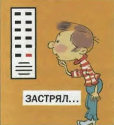
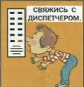
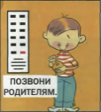
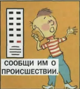

ЕСЛИ ВАШ РЕБЕНОК ОКАЗАЛСЯ ОДИН ЗАБЛОКИРОВАННЫМ В ЛИФТЕ
1. Научите ребенка не бояться остаться одному в лифте.
2. Разъясните порядок его действий при блокировании лифта, зайдя с ним в лифт.
|

|
1. Объясните ребенку, чтобы он при блокировании лифта он не паниковал. |
|

|
2. Покажите ребенку местонахождение в лифте аварийной кнопки вызова диспетчера и объясните правила пользования ею. |
|

|
3. Если у Вашего ребенка есть мобильный телефон, то при блокировании лифта напомните ему о необходимости позвонить Вам. |
|

|
5. Предупредите ребенка о невозможности попыток самостоятельного открытия лифта. |
|
|
6. Объясните ребенку, что возможно ему придется ждать помощи. |
Источник и подробная информация о действиях на сайте:
http//www.mchs.gov.ru
ТЕЛЕФОН СЛУЖБЫ СПАСЕНИЯ: 112